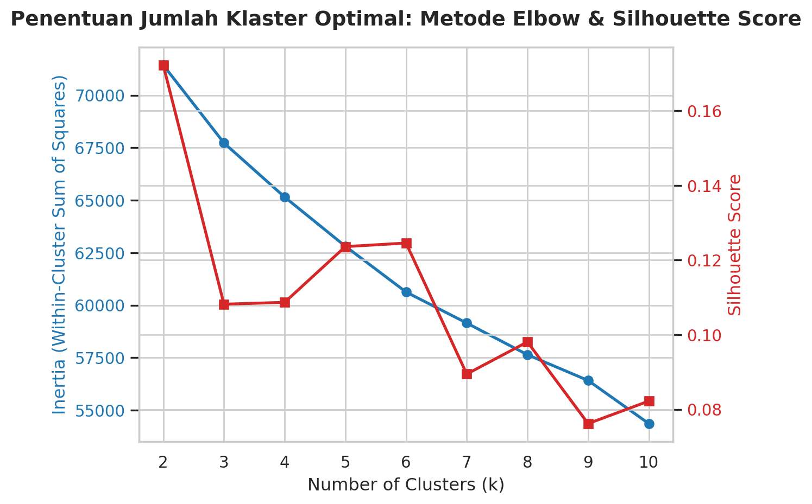
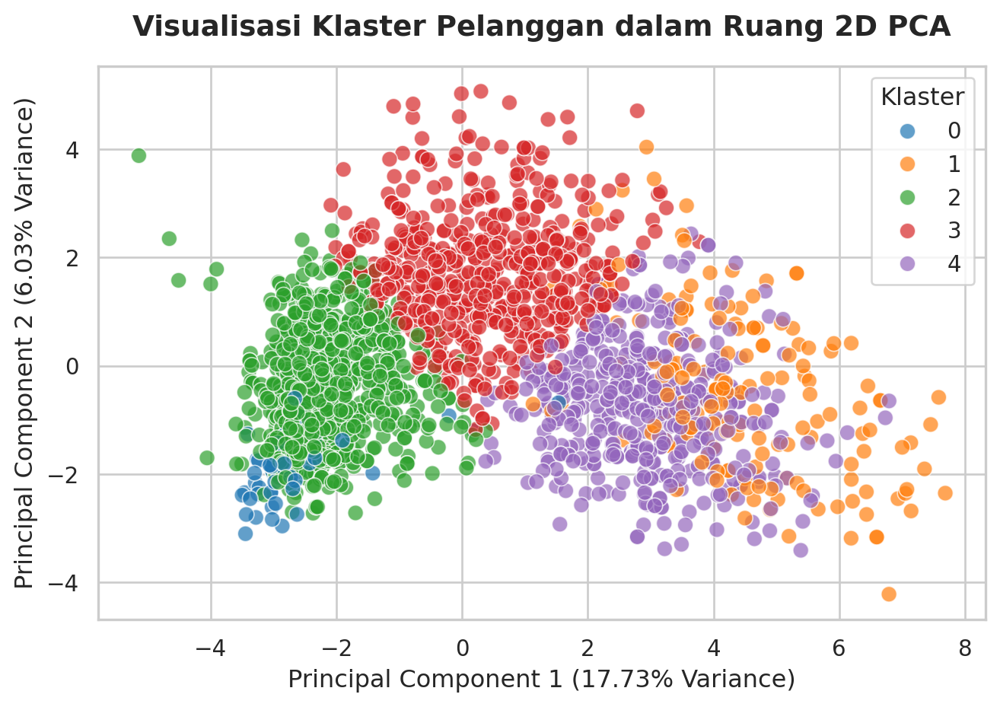

import pandas as pd
import numpy as np
from sklearn.preprocessing import StandardScaler, OneHotEncoder
from sklearn.impute import SimpleImputer
from sklearn.cluster import KMeans
from sklearn.metrics import silhouette_score
from sklearn.decomposition import PCA
import matplotlib.pyplot as plt
import seaborn as sns
from IPython.display import display
sns.set_theme(style="whitegrid")Customer Personality Analysis - Unsupervised Learning Tugas 3
Nama: Muhammad Hidayat
NIM: 0527471321 Step 1: Memuat Dataset
File cpa.csv sebenarnya merupakan tab-delimited, jadi kita perlu menyebutkan sep='\t' saat membacanya dengan pd.read_csv().
data = pd.read_csv('cpa.csv', sep='\t')
display(data.head())| ID | Year_Birth | Education | Marital_Status | Income | Kidhome | Teenhome | Dt_Customer | Recency | MntWines | ... | NumWebVisitsMonth | AcceptedCmp3 | AcceptedCmp4 | AcceptedCmp5 | AcceptedCmp1 | AcceptedCmp2 | Complain | Z_CostContact | Z_Revenue | Response | |
|---|---|---|---|---|---|---|---|---|---|---|---|---|---|---|---|---|---|---|---|---|---|
| 0 | 5524 | 1957 | Graduation | Single | 58138.0 | 0 | 0 | 04-09-2012 | 58 | 635 | ... | 7 | 0 | 0 | 0 | 0 | 0 | 0 | 3 | 11 | 1 |
| 1 | 2174 | 1954 | Graduation | Single | 46344.0 | 1 | 1 | 08-03-2014 | 38 | 11 | ... | 5 | 0 | 0 | 0 | 0 | 0 | 0 | 3 | 11 | 0 |
| 2 | 4141 | 1965 | Graduation | Together | 71613.0 | 0 | 0 | 21-08-2013 | 26 | 426 | ... | 4 | 0 | 0 | 0 | 0 | 0 | 0 | 3 | 11 | 0 |
| 3 | 6182 | 1984 | Graduation | Together | 26646.0 | 1 | 0 | 10-02-2014 | 26 | 11 | ... | 6 | 0 | 0 | 0 | 0 | 0 | 0 | 3 | 11 | 0 |
| 4 | 5324 | 1981 | PhD | Married | 58293.0 | 1 | 0 | 19-01-2014 | 94 | 173 | ... | 5 | 0 | 0 | 0 | 0 | 0 | 0 | 3 | 11 | 0 |
5 rows × 29 columns
2 Step 2: Eksplorasi Data & Pembersihan Awal
Beberapa langkah eksplorasi dan pembersihan awal yang bisa dilakukan:
- Cek tipe data dan jumlah missing value per kolom
- Cek statistik untuk kolom numerik
- Cek jumlah kategori unik untuk kolom kategori
Pertama, kita akan melihat tipe data dan jumlah missing value:
display(data.dtypes)ID int64
Year_Birth int64
Education str
Marital_Status str
Income float64
Kidhome int64
Teenhome int64
Dt_Customer str
Recency int64
MntWines int64
MntFruits int64
MntMeatProducts int64
MntFishProducts int64
MntSweetProducts int64
MntGoldProds int64
NumDealsPurchases int64
NumWebPurchases int64
NumCatalogPurchases int64
NumStorePurchases int64
NumWebVisitsMonth int64
AcceptedCmp3 int64
AcceptedCmp4 int64
AcceptedCmp5 int64
AcceptedCmp1 int64
AcceptedCmp2 int64
Complain int64
Z_CostContact int64
Z_Revenue int64
Response int64
dtype: objectmissing_info = data.isnull().sum()
print("Kolom dengan nilai kosong:")
print(missing_info[missing_info > 0])Kolom dengan nilai kosong:
Income 24
dtype: int64Terdapat 24 baris kosong di kolom Income. Kita akan melakukan imputasi untuk kolom ini nanti.
Selanjutnya, kita bisa melihat statistik untuk kolom numerik, dipecah per 9 kolom untuk memudahkan pembacaan:
numeric_cols = data.select_dtypes(include=[np.number]).columns
for i in range(0, len(numeric_cols), 9):
display(data[numeric_cols[i:i+9]].describe())| ID | Year_Birth | Income | Kidhome | Teenhome | Recency | MntWines | MntFruits | MntMeatProducts | |
|---|---|---|---|---|---|---|---|---|---|
| count | 2240.000000 | 2240.000000 | 2216.000000 | 2240.000000 | 2240.000000 | 2240.000000 | 2240.000000 | 2240.000000 | 2240.000000 |
| mean | 5592.159821 | 1968.805804 | 52247.251354 | 0.444196 | 0.506250 | 49.109375 | 303.935714 | 26.302232 | 166.950000 |
| std | 3246.662198 | 11.984069 | 25173.076661 | 0.538398 | 0.544538 | 28.962453 | 336.597393 | 39.773434 | 225.715373 |
| min | 0.000000 | 1893.000000 | 1730.000000 | 0.000000 | 0.000000 | 0.000000 | 0.000000 | 0.000000 | 0.000000 |
| 25% | 2828.250000 | 1959.000000 | 35303.000000 | 0.000000 | 0.000000 | 24.000000 | 23.750000 | 1.000000 | 16.000000 |
| 50% | 5458.500000 | 1970.000000 | 51381.500000 | 0.000000 | 0.000000 | 49.000000 | 173.500000 | 8.000000 | 67.000000 |
| 75% | 8427.750000 | 1977.000000 | 68522.000000 | 1.000000 | 1.000000 | 74.000000 | 504.250000 | 33.000000 | 232.000000 |
| max | 11191.000000 | 1996.000000 | 666666.000000 | 2.000000 | 2.000000 | 99.000000 | 1493.000000 | 199.000000 | 1725.000000 |
| MntFishProducts | MntSweetProducts | MntGoldProds | NumDealsPurchases | NumWebPurchases | NumCatalogPurchases | NumStorePurchases | NumWebVisitsMonth | AcceptedCmp3 | |
|---|---|---|---|---|---|---|---|---|---|
| count | 2240.000000 | 2240.000000 | 2240.000000 | 2240.000000 | 2240.000000 | 2240.000000 | 2240.000000 | 2240.000000 | 2240.000000 |
| mean | 37.525446 | 27.062946 | 44.021875 | 2.325000 | 4.084821 | 2.662054 | 5.790179 | 5.316518 | 0.072768 |
| std | 54.628979 | 41.280498 | 52.167439 | 1.932238 | 2.778714 | 2.923101 | 3.250958 | 2.426645 | 0.259813 |
| min | 0.000000 | 0.000000 | 0.000000 | 0.000000 | 0.000000 | 0.000000 | 0.000000 | 0.000000 | 0.000000 |
| 25% | 3.000000 | 1.000000 | 9.000000 | 1.000000 | 2.000000 | 0.000000 | 3.000000 | 3.000000 | 0.000000 |
| 50% | 12.000000 | 8.000000 | 24.000000 | 2.000000 | 4.000000 | 2.000000 | 5.000000 | 6.000000 | 0.000000 |
| 75% | 50.000000 | 33.000000 | 56.000000 | 3.000000 | 6.000000 | 4.000000 | 8.000000 | 7.000000 | 0.000000 |
| max | 259.000000 | 263.000000 | 362.000000 | 15.000000 | 27.000000 | 28.000000 | 13.000000 | 20.000000 | 1.000000 |
| AcceptedCmp4 | AcceptedCmp5 | AcceptedCmp1 | AcceptedCmp2 | Complain | Z_CostContact | Z_Revenue | Response | |
|---|---|---|---|---|---|---|---|---|
| count | 2240.000000 | 2240.000000 | 2240.000000 | 2240.000000 | 2240.000000 | 2240.0 | 2240.0 | 2240.000000 |
| mean | 0.074554 | 0.072768 | 0.064286 | 0.013393 | 0.009375 | 3.0 | 11.0 | 0.149107 |
| std | 0.262728 | 0.259813 | 0.245316 | 0.114976 | 0.096391 | 0.0 | 0.0 | 0.356274 |
| min | 0.000000 | 0.000000 | 0.000000 | 0.000000 | 0.000000 | 3.0 | 11.0 | 0.000000 |
| 25% | 0.000000 | 0.000000 | 0.000000 | 0.000000 | 0.000000 | 3.0 | 11.0 | 0.000000 |
| 50% | 0.000000 | 0.000000 | 0.000000 | 0.000000 | 0.000000 | 3.0 | 11.0 | 0.000000 |
| 75% | 0.000000 | 0.000000 | 0.000000 | 0.000000 | 0.000000 | 3.0 | 11.0 | 0.000000 |
| max | 1.000000 | 1.000000 | 1.000000 | 1.000000 | 1.000000 | 3.0 | 11.0 | 1.000000 |
Kolom Z_CostContact dan Z_Revenue menunjukkan standar deviasi nol, yang berarti semua nilai di kolom tersebut sama. Kita bisa menghapus kedua kolom ini karena tidak memberikan informasi yang berguna untuk klasterisasi. Kolom ID juga tidak relevan untuk analisis klasterisasi, jadi kita akan menghapusnya juga.
Terakhir, kita bisa melihat jumlah kategori unik untuk kolom kategori:
categorical_cols = data.select_dtypes(include=['str']).columns
for col in categorical_cols:
print(f"Kolom '{col}' memiliki {data[col].nunique()} kategori unik.")Kolom 'Education' memiliki 5 kategori unik.
Kolom 'Marital_Status' memiliki 8 kategori unik.
Kolom 'Dt_Customer' memiliki 663 kategori unik.Kolom ‘Education’ memiliki 5 kategori unik dan kolom ‘Marital_Status’ memiliki 8. Kolom ‘Dt_Customer’, yang memiliki 663 kategori unik, akan kita anggap sebagai kolom tersendiri dan akan diproses sebagai tanggal.
3 Step 3: Identifikasi kolom numerik & kategori
Dari langkah eksplorasi sebelumnya, kita sudah mengidentifikasi kolom numerik dan kategori. Untuk sebagian besar kolom, bisa saja digunakan apa adanya. Untuk kolom Dt_Customer, kita bisa mengubahnya menjadi fitur numerik dengan menghitung jumlah hari sejak tanggal tersebut hingga tanggal terakhir dalam dataset. Sama halnya dengan kolom Year_Birth, kita bisa mengubahnya menjadi umur dengan menghitung selisih antara tahun saat ini dan tahun lahir. Data yang telah diubah ini akan kita simpan dalam variabel baru agar tidak tercampur dengan data asli.
Untuk mempermudah, kita akan menyimpan nama-nama kolom numerik dan kategori dalam variabel terpisah:
# Kolom yang akan dihapus
cols_to_drop = ['ID', 'Z_CostContact', 'Z_Revenue']
data_processed = data.drop(columns=cols_to_drop)
# Proses fitur 'Dt_Customer' menjadi 'Customer_Since_Days' dan 'Year_Birth' menjadi 'Age'
data_processed['Dt_Customer'] = pd.to_datetime(data_processed['Dt_Customer'], format='%d-%m-%Y', errors='coerce')
_max_date = data_processed['Dt_Customer'].max()
data_processed['Customer_Since_Days'] = (_max_date - data_processed['Dt_Customer']).dt.days
data_processed['Age'] = 2024 - data_processed['Year_Birth']
# Hapus kolom asli setelah diubah, gunakan inplace=True agar langsung diterapkan
data_processed.drop(columns=['Dt_Customer', 'Year_Birth'], inplace=True)
# Kelomokan nama kolom numerik dan kategori
numerical_cols = data_processed.select_dtypes(include=[np.number]).columns.tolist()
categorical_cols = data_processed.select_dtypes(include=['str']).columns.tolist()
print(f"Kolom Numerik ({len(numerical_cols)}):\n")
for col in numerical_cols:
print(f"- {col}")
print(f"\nKolom Kategori ({len(categorical_cols)}):\n")
for col in categorical_cols:
print(f"- {col}")Kolom Numerik (24):
- Income
- Kidhome
- Teenhome
- Recency
- MntWines
- MntFruits
- MntMeatProducts
- MntFishProducts
- MntSweetProducts
- MntGoldProds
- NumDealsPurchases
- NumWebPurchases
- NumCatalogPurchases
- NumStorePurchases
- NumWebVisitsMonth
- AcceptedCmp3
- AcceptedCmp4
- AcceptedCmp5
- AcceptedCmp1
- AcceptedCmp2
- Complain
- Response
- Customer_Since_Days
- Age
Kolom Kategori (2):
- Education
- Marital_Status
4 Step 4: Imputasi missing value
Kita akan melakukan imputasi untuk kolom Income yang memiliki 24 nilai kosong. Karena Income adalah kolom numerik, kita bisa menggunakan strategi imputasi seperti median atau mean. Dalam kasus ini, kita akan menggunakan median karena lebih tahan terhadap outlier.
imputer = SimpleImputer(strategy='median')
data_processed['Income'] = imputer.fit_transform(data_processed[['Income']])
print("Jumlah nilai kosong setelah imputasi:")
print(data_processed['Income'].isnull().sum())Jumlah nilai kosong setelah imputasi:
0Kita tampilkan statistik untuk kolom Customer_Since_Days dan Age setelah proses transformasi, serta perbandingan antara kolom Income sebelum dan sesudah imputasi.
display(data_processed[['Customer_Since_Days', 'Age']].describe())| Customer_Since_Days | Age | |
|---|---|---|
| count | 2240.000000 | 2240.000000 |
| mean | 353.582143 | 55.194196 |
| std | 202.122512 | 11.984069 |
| min | 0.000000 | 28.000000 |
| 25% | 180.750000 | 47.000000 |
| 50% | 355.500000 | 54.000000 |
| 75% | 529.000000 | 65.000000 |
| max | 699.000000 | 131.000000 |
income_comparison = pd.DataFrame({
'Income (pre)': data['Income'],
'Income (post)': data_processed['Income']
})
display(income_comparison.describe())| Income (pre) | Income (post) | |
|---|---|---|
| count | 2216.000000 | 2240.000000 |
| mean | 52247.251354 | 52237.975446 |
| std | 25173.076661 | 25037.955891 |
| min | 1730.000000 | 1730.000000 |
| 25% | 35303.000000 | 35538.750000 |
| 50% | 51381.500000 | 51381.500000 |
| 75% | 68522.000000 | 68289.750000 |
| max | 666666.000000 | 666666.000000 |
5 Step 5: Encoding fitur kategori
Encoding akan menggunakan one-hot encoding pada kolom kategori, kemudian digabung dengan kolom numerik sebagai dataframe baru. Dengan menggunakan one-hot dibandingkan label atau ordinal encoding, ini akan mengurangi bias dalam kalkulasi K-Means.
Dalam proses encoding, kita bisa membuang salah satu variabel dalam teknik dummy variable trap, dan dilakukan dengan argumen drop='first'. Hal ini berguna dalam model regresi linear, namun tidak perlu dalam klasifikasi, karena berisiko menimbulkan bias terhadap kategori referensi yang dihapus tersebut karena jaraknya ke kategori lain dihitung secara asimetris. Oleh karena itu, kita pilih untuk tidak melakukan ini, dengan menggunakan argumen drop=None. Keuntungan cara ini adalah mempermudah interpretasi PCA.
encoder = OneHotEncoder(sparse_output=False, drop=None)
encoded_categorical = encoder.fit_transform(data_processed[categorical_cols])
encoded_categorical_df = pd.DataFrame(encoded_categorical, columns=encoder.get_feature_names_out(categorical_cols))5.1 Gabungkan data numerik & hasil encoding
data_final = pd.concat([data_processed[numerical_cols].reset_index(drop=True), encoded_categorical_df], axis=1)
display(data_final.head())| Income | Kidhome | Teenhome | Recency | MntWines | MntFruits | MntMeatProducts | MntFishProducts | MntSweetProducts | MntGoldProds | ... | Education_Master | Education_PhD | Marital_Status_Absurd | Marital_Status_Alone | Marital_Status_Divorced | Marital_Status_Married | Marital_Status_Single | Marital_Status_Together | Marital_Status_Widow | Marital_Status_YOLO | |
|---|---|---|---|---|---|---|---|---|---|---|---|---|---|---|---|---|---|---|---|---|---|
| 0 | 58138.0 | 0 | 0 | 58 | 635 | 88 | 546 | 172 | 88 | 88 | ... | 0.0 | 0.0 | 0.0 | 0.0 | 0.0 | 0.0 | 1.0 | 0.0 | 0.0 | 0.0 |
| 1 | 46344.0 | 1 | 1 | 38 | 11 | 1 | 6 | 2 | 1 | 6 | ... | 0.0 | 0.0 | 0.0 | 0.0 | 0.0 | 0.0 | 1.0 | 0.0 | 0.0 | 0.0 |
| 2 | 71613.0 | 0 | 0 | 26 | 426 | 49 | 127 | 111 | 21 | 42 | ... | 0.0 | 0.0 | 0.0 | 0.0 | 0.0 | 0.0 | 0.0 | 1.0 | 0.0 | 0.0 |
| 3 | 26646.0 | 1 | 0 | 26 | 11 | 4 | 20 | 10 | 3 | 5 | ... | 0.0 | 0.0 | 0.0 | 0.0 | 0.0 | 0.0 | 0.0 | 1.0 | 0.0 | 0.0 |
| 4 | 58293.0 | 1 | 0 | 94 | 173 | 43 | 118 | 46 | 27 | 15 | ... | 0.0 | 1.0 | 0.0 | 0.0 | 0.0 | 1.0 | 0.0 | 0.0 | 0.0 | 0.0 |
5 rows × 37 columns
6 Step 6: Scaling data
Standardisasi data menggunakan StandardScaler berdasarkan Z-score untuk memastikan semua fitur memiliki skala yang sama, sehingga algoritma klasterisasi tidak bias terhadap fitur dengan rentang nilai yang lebih besar.
scaler = StandardScaler()
data_scaled_ndarray = scaler.fit_transform(data_final)
# karena data_scaled_ndarray adalah numpy array, kita buat kembali ke dataframe
data_scaled = pd.DataFrame(data_scaled_ndarray, columns=data_final.columns)7 Step 7: Tentukan jumlah cluster optimal (Elbow + Silhouette)
7.0.1 Penjelasan Metode Elbow dan Silhouette Score
Untuk menentukan jumlah klaster (\(k\)) terbaik, kita menggunakan kombinasi dari dua metode evaluasi: Elbow dan Silhouette.
Metode Elbow (Inertia / Within-Cluster Sum of Squares) Inersia mengukur jumlah kuadrat jarak dari setiap titik data ke centroid klaster mereka. Nilai inersia akan selalu menurun seiring bertambahnya jumlah klaster. Pada satu titik, laju penurunan inersia mulai melandai secara signifikan, dimana menambahkan klaster setelah titik ini hanya memberikan sedikit penurunan inersia namun meningkatkan kompleksitas model. Inilah titik “siku” (elbow) yang akan kita cari, titik yang optimal sebagai trade-off antara kompleksitas dan efektivitas.
Metode Silhouette Score score mengukur seberapa mirip suatu objek dengan klasternya sendiri (kohesi) dibandingkan dengan klaster lainnya (pemisahan). Nilai skor berkisar antara -1 hingga 1. Nilai silhouette score yang semakin mendekati 1 menunjukkan bahwa titik data terkelompok dengan baik, memiliki batas yang jelas, dan terpisah jauh dari klaster tetangga. Kita memilih \(k\) yang menghasilkan puncak atau nilai silhouette tertinggi.
Metode Elbow terkadang menghasilkan kurva melandai yang subjektif tanpa titik siku yang jelas. Di sisi lain, Silhouette score cenderung memberikan skor tertinggi pada \(k=2\) karena pemisahan biner paling mudah dilakukan secara matematis, namun secara bisnis \(k=2\) terlalu umum dan tidak informatif untuk segmentasi pelanggan. Dengan menggabungkan keduanya, kita mencari titik di mana inersia sudah cukup rendah (setelah elbow) dan silhouette score memiliki nilai yang relatif tinggi.
Rentang \(k\) yang diuji dipilih antara 2 hingga 10. Batas bawah adalah \(k=2\) karena klasterisasi minimal membutuhkan 2 kelompok. Batas atas dipilih \(k=10\) karena dalam segmentasi pelanggan bisnis, memiliki lebih dari 10 segmen akan terlalu rumit dan tidak praktis untuk merancang kampanye pemasaran yang spesifik bagi masing-masing kelompok.
# Menghitung inersia dan silhouette score untuk k = 2 s/d 10
ks = range(2, 11)
inertias = []
silhouettes = []
for k in ks:
kmeans = KMeans(n_clusters=k, random_state=42, n_init=10)
labels = kmeans.fit_predict(data_scaled)
inertias.append(kmeans.inertia_)
silhouettes.append(silhouette_score(data_scaled, labels))
# Visualisasi kurva Elbow dan Silhouette Score berdampingan
fig, ax1 = plt.subplots()
color = 'tab:blue'
ax1.set_xlabel('Number of Clusters (k)', fontsize=12)
ax1.set_ylabel('Inertia (Within-Cluster Sum of Squares)', color=color, fontsize=12)
ax1.plot(ks, inertias, 'o-', color=color, linewidth=2, label='Inertia')
ax1.tick_params(axis='y', labelcolor=color)
ax2 = ax1.twinx()
color = 'tab:red'
ax2.set_ylabel('Silhouette Score', color=color, fontsize=12)
ax2.plot(ks, silhouettes, 's-', color=color, linewidth=2, label='Silhouette Score')
ax2.tick_params(axis='y', labelcolor=color)
plt.title('Penentuan Jumlah Klaster Optimal: Metode Elbow & Silhouette Score', fontsize=14, fontweight='bold', pad=15)
fig.tight_layout()
plt.show()
Berdasarkan hasil visualisasi kurva evaluasi inersia (Elbow Method) dan Silhouette Score di atas, penentuan jumlah klaster optimal dapat dijelaskan sebagai berikut.
Titik tekukan atau siku (elbow point) mulai terbentuk secara jelas pada area rentang \(k = 4\) hingga \(k = 5\). Setelah melewati \(k = 5\), penambahan jumlah klaster baru tidak lagi memberikan penurunan inersia yang signifikan.
Terdapat peningkatan lokal yang signifikan pada \(k = 5\) dan \(k = 6\), dengan nilai skor yang relatif stabil dan tinggi. Meskipun \(k=2\) secara teoritis memiliki nilai silhouette yang tinggi, jumlah segmen tersebut terlalu sedikit untuk menghasilkan segmentasi profil kepribadian pelanggan yang bermakna bagi tim bisnis.
Dengan mempertimbangkan keseimbangan antara performa model (inersia rendah dan silhouette score tinggi) serta nilai guna praktis segmentasi bisnis, jumlah klaster optimal dipilih sebesar \(k = 5\).
8 Step 8: Melakukan Klasterisasi
optimal_k = 5
kmeans = KMeans(n_clusters=optimal_k, random_state=42, n_init=10)
cluster_labels = kmeans.fit_predict(data_scaled)
# Menyimpan hasil klaster ke dataframe
data['Cluster'] = cluster_labels
data_final['Cluster'] = cluster_labels
# Menampilkan distribusi jumlah anggota per klaster
cluster_counts = pd.Series(cluster_labels).value_counts().sort_index()
for cluster_id, count in cluster_counts.items():
print(f"Klaster {cluster_id}: {count} pelanggan ({count/len(data)*100:.2f}%)")Klaster 0: 54 pelanggan (2.41%)
Klaster 1: 171 pelanggan (7.63%)
Klaster 2: 979 pelanggan (43.71%)
Klaster 3: 579 pelanggan (25.85%)
Klaster 4: 457 pelanggan (20.40%)9 Step 9: Visualisasi klaster dengan PCA 2D
Perhitungan Principal Component Analysis (PCA) untuk visualisasi 2D serta persentase variansi untuk memahami seberapa baik PCA mempertahankan informasi dari data asli.
# Menjalankan PCA untuk reduksi dimensi menjadi 2 komponen
pca = PCA(n_components=2, random_state=42)
pca_result = pca.fit_transform(data_scaled)
data_pca = pd.DataFrame(pca_result, columns=['PC1', 'PC2'])
data_pca['Cluster'] = cluster_labels
# Menampilkan persentase variansi yang dijelaskan oleh PCA
variance_explained = pca.explained_variance_ratio_
print(f"Variansi yang dijelaskan oleh PC1: {variance_explained[0]*100:.2f}%")
print(f"Variansi yang dijelaskan oleh PC2: {variance_explained[1]*100:.2f}%")
print(f"Total variansi yang dipertahankan dalam 2D: {sum(variance_explained)*100:.2f}%")Variansi yang dijelaskan oleh PC1: 17.73%
Variansi yang dijelaskan oleh PC2: 6.03%
Total variansi yang dipertahankan dalam 2D: 23.76%Visualisasi klaster pada ruang PCA 2D dengan pewarnaan berdasarkan label klaster.
# Plot sebaran klaster pada bidang PCA 2D
plt.figure()
colors = ['#1f77b4', '#ff7f0e', '#2ca02c', '#d62728', '#9467bd'] # Palet premium
sns.scatterplot(
x='PC1', y='PC2',
hue='Cluster',
palette=colors[:optimal_k],
data=data_pca,
legend="full",
alpha=0.7,
s=60
)
plt.title('Visualisasi Klaster Pelanggan dalam Ruang 2D PCA', fontsize=14, fontweight='bold', pad=15)
plt.xlabel(f'Principal Component 1 ({variance_explained[0]*100:.2f}% Variance)', fontsize=12)
plt.ylabel(f'Principal Component 2 ({variance_explained[1]*100:.2f}% Variance)', fontsize=12)
plt.legend(title='Klaster', loc='best')
plt.tight_layout()
plt.show()
10 Step 10: Profiling cluster (rata-rata fitur per cluster)
# Menghitung rata-rata fitur untuk setiap klaster
cluster_profiles = data_final.groupby('Cluster').mean()
cluster_sizes = data_final['Cluster'].value_counts().sort_index()
profile_table = pd.concat([cluster_profiles, cluster_sizes.rename('Cluster Size')], axis=1)
# dump profile table ke file csv
profile_table.to_csv('cluster_profiles.csv')
# Menampilkan tabel profil klaster
# Format tampilan angka agar rapi
pd.set_option('display.float_format', lambda x: '%.2f' % x)
display(profile_table.T.rename(columns={0: 'Cluster 0', 1: 'Cluster 1', 2: 'Cluster 2', 3: 'Cluster 3', 4: 'Cluster 4'}))| Cluster | Cluster 0 | Cluster 1 | Cluster 2 | Cluster 3 | Cluster 4 |
|---|---|---|---|---|---|
| Income | 20306.26 | 81569.49 | 35899.20 | 57046.90 | 73944.58 |
| Kidhome | 0.63 | 0.05 | 0.80 | 0.25 | 0.05 |
| Teenhome | 0.09 | 0.13 | 0.46 | 0.95 | 0.24 |
| Recency | 48.44 | 49.83 | 49.73 | 47.72 | 49.35 |
| MntWines | 7.24 | 874.70 | 42.51 | 459.78 | 488.02 |
| MntFruits | 11.11 | 56.43 | 4.87 | 19.96 | 70.78 |
| MntMeatProducts | 11.44 | 469.13 | 24.21 | 127.72 | 427.75 |
| MntFishProducts | 17.06 | 77.05 | 7.05 | 26.25 | 104.73 |
| MntSweetProducts | 12.11 | 65.48 | 4.90 | 19.57 | 71.42 |
| MntGoldProds | 22.83 | 77.34 | 15.11 | 58.65 | 77.46 |
| NumDealsPurchases | 1.80 | 1.05 | 2.03 | 3.89 | 1.51 |
| NumWebPurchases | 1.89 | 5.44 | 2.11 | 6.32 | 5.23 |
| NumCatalogPurchases | 0.48 | 6.05 | 0.56 | 3.00 | 5.74 |
| NumStorePurchases | 2.85 | 8.26 | 3.23 | 7.64 | 8.36 |
| NumWebVisitsMonth | 6.87 | 3.00 | 6.40 | 5.91 | 2.93 |
| AcceptedCmp3 | 0.11 | 0.14 | 0.07 | 0.06 | 0.06 |
| AcceptedCmp4 | 0.00 | 0.39 | 0.01 | 0.13 | 0.03 |
| AcceptedCmp5 | 0.00 | 0.94 | 0.00 | 0.00 | 0.00 |
| AcceptedCmp1 | 0.00 | 0.44 | 0.00 | 0.03 | 0.11 |
| AcceptedCmp2 | 0.00 | 0.12 | 0.00 | 0.01 | 0.00 |
| Complain | 0.00 | 0.01 | 0.01 | 0.01 | 0.01 |
| Response | 0.04 | 0.58 | 0.09 | 0.12 | 0.17 |
| Customer_Since_Days | 428.20 | 356.05 | 312.75 | 413.16 | 355.84 |
| Age | 46.54 | 54.64 | 52.60 | 59.88 | 56.05 |
| Education_2n Cycle | 0.00 | 0.07 | 0.12 | 0.05 | 0.11 |
| Education_Basic | 1.00 | 0.00 | 0.00 | 0.00 | 0.00 |
| Education_Graduation | 0.00 | 0.52 | 0.52 | 0.45 | 0.59 |
| Education_Master | 0.00 | 0.16 | 0.17 | 0.20 | 0.12 |
| Education_PhD | 0.00 | 0.25 | 0.20 | 0.29 | 0.18 |
| Marital_Status_Absurd | 0.00 | 0.01 | 0.00 | 0.00 | 0.00 |
| Marital_Status_Alone | 0.00 | 0.00 | 0.00 | 0.00 | 0.00 |
| Marital_Status_Divorced | 0.02 | 0.08 | 0.10 | 0.13 | 0.09 |
| Marital_Status_Married | 0.37 | 0.42 | 0.40 | 0.39 | 0.35 |
| Marital_Status_Single | 0.33 | 0.19 | 0.23 | 0.16 | 0.25 |
| Marital_Status_Together | 0.26 | 0.26 | 0.25 | 0.28 | 0.26 |
| Marital_Status_Widow | 0.02 | 0.05 | 0.02 | 0.04 | 0.05 |
| Marital_Status_YOLO | 0.00 | 0.00 | 0.00 | 0.00 | 0.00 |
| Cluster Size | 54.00 | 171.00 | 979.00 | 579.00 | 457.00 |
11 Simpulkan Analisa dari hasil
Berdasarkan hasil analisis profil pada tabel di atas, kita dapat mengidentifikasi karakteristik khas dari masing-masing klaster pelanggan serta menyusun strategi pemasaran personalisasi yang tepat sasaran (targeted marketing campaigns).
11.1 Karakteristik Utama dari Setiap Klaster
11.1.1 Klaster 0: Frugal Basic-Educated Consumers (Konsumen Hemat Berpendidikan Dasar)
- Karakteristik Utama: Kelompok ini sangat kecil (hanya 54 pelanggan atau 2,4% dari total data), beranggotakan pelanggan dengan tingkat pendidikan Basic (100% dari klaster ini) dan rata-rata pendapatan terendah (\(~\$20.306\)). Pengeluaran total mereka sangat minim (\(~\$81,80\)) dengan prioritas belanja yang merata di angka kecil. Kelompok ini cukup aktif mengunjungi web (6,87 kali/bulan) tetapi hampir tidak pernah melakukan transaksi online atau menanggapi kampanye pemasaran (tingkat respons 3,7%).
- Demografi: Usia rata-rata paling muda di antara klaster lainnya (46,5 tahun) dan memiliki tanggungan anak (0,72).
11.1.2 Klaster 1: Affluent Elite Spenders (Pembelanja Elite Kelas Atas)
- Karakteristik Utama: Kelompok premium (171 pelanggan atau 7,6%) dengan tingkat pendapatan tertinggi (\(~\$81.569\)) dan sangat sedikit anak di rumah (0,18). Mereka mencatat pengeluaran belanja tertinggi (\(~\$1.620,13\)), didominasi oleh pembelian produk Anggur (Wines, \(~\$874,70\)) dan Daging (Meat, \(~\$469,13\)). Mereka jarang mengunjungi situs web (3,0 kali/bulan), tidak peduli dengan promo/diskon (pembelian deals terendah), dan sangat responsif terhadap kampanye (respons kampanye terakhir mencapai 57,9% serta tingkat penerimaan Kampanye 5 mencapai 94,2%).
- Preferensi Saluran: Menyukai katalog (6,05) dan pembelian langsung di toko fisik (8,26).
11.1.3 Klaster 2: Budget-Conscious Families (Keluarga Hemat & Pemburu Diskon)
- Karakteristik Utama: Kelompok terbesar dalam dataset (979 pelanggan atau 43,7%). Mereka adalah keluarga dengan tingkat pendapatan menengah ke bawah (\(~\$35.899\)) dan jumlah anak terbanyak di rumah (rata-rata 1,26 anak). Pengeluaran belanja mereka sangat rendah (\(~\$98,65\)). Mereka sering berselancar di web (6,40 kunjungan/bulan) untuk mencari penawaran diskon, tercermin dari pembelian memanfaatkan promosi yang cukup dominan (2,03). Tingkat respons terhadap kampanye sangat rendah (9,1%).
- Preferensi Saluran: Pembelian langsung di toko fisik (3,23) dan web (2,11).
11.1.4 Klaster 3: Mature Web-Active Bargain Hunters (Pemburu Diskon Online Senior)
- Karakteristik Utama: Kelompok ini terdiri dari 579 pelanggan (25,8%) dengan rata-rata usia tertua (~60 tahun) dan didominasi oleh keluarga yang memiliki anak remaja (0,95 Teenhome). Dengan pendapatan menengah-atas (\(~\$57.046\)), mereka memiliki pengeluaran belanja menengah-tinggi (\(~\$711,93\)) yang berpusat pada Anggur (\(~\$459,78\)) dan Emas (\(~\$58,65\)). Karakteristik mencolok mereka adalah pembelian menggunakan diskon tertinggi (3,89) dan transaksi melalui web tertinggi (6,32) di antara semua klaster.
- Preferensi Saluran: Berbelanja aktif melalui Web dan Toko.
11.1.5 Klaster 4: Independent High-Value Shoppers (Pembelanja Mandiri Kelas Menengah Atas)
- Karakteristik Utama: Kelompok mapan (457 pelanggan atau 20,4%) dengan pendapatan tinggi (\(~\$73.944\)) dan sedikit tanggungan anak (0,29). Mereka memiliki pengeluaran belanja yang sangat tinggi (\(~\$1.239,76\)), dengan pengeluaran terbesar untuk produk Buah (\(~\$70,78\)), Ikan (\(~\$104,73\)), Manisan (\(~\$71,42\)), dan Emas (\(~\$77,46\)). Mereka mandiri dalam berbelanja, sangat jarang mengunjungi web (2,93 kali/bulan), dan tidak peduli pada kampanye promosi (tingkat respons hanya 16,6% dan penerimaan Kampanye 1-5 hampir nol).
- Preferensi Saluran: Memiliki pembelian di toko fisik tertinggi (8,36) dan katalog yang kuat (5,74).
11.2 Implikasi Bisnis dan Strategi Pemasaran Personalisasi
Dengan memahami perbedaan mendasar ini, perusahaan dapat menghentikan strategi pemasaran “satu ukuran untuk semua” (one-size-fits-all) dan beralih ke strategi personalisasi yang lebih efektif:
- Strategi untuk Klaster 0 (Frugal Basic-Educated Consumers):
- Tindakan: Batasi anggaran iklan kampanye untuk klaster ini demi efisiensi biaya. Pemasaran diarahkan pada produk esensial atau paket promosi bernilai sangat murah (entry-level).
- Saluran: Gunakan pemasaran SMS atau pesan singkat instan karena mereka tidak responsif terhadap kampanye email besar.
- Strategi untuk Klaster 1 (Affluent Elite Spenders):
- Tindakan: Targetkan dengan program loyalitas VIP eksklusif, pra-pemesanan (pre-order) untuk produk edisi terbatas, serta penawaran paket produk anggur dan daging kualitas premium.
- Saluran: Manfaatkan pengiriman katalog cetak eksklusif ke rumah dan pendekatan personal via manajer akun VIP, karena mereka sangat responsif terhadap katalog dan toko fisik.
- Strategi untuk Klaster 2 (Budget-Conscious Families):
- Tindakan: Buat promosi bertema keluarga seperti “Back to School” atau “Family Bundles”. Sediakan program loyalitas poin yang dapat ditukar dengan diskon belanja kebutuhan sehari-hari.
- Saluran: Gunakan promosi berbasis aplikasi web atau email newsletter yang berisi daftar produk diskon, karena mereka aktif memburu deals.
- Strategi untuk Klaster 3 (Mature Web-Active Bargain Hunters):
- Tindakan: Fokus pada penawaran diskon secara online (misal: flash sales atau kupon diskon digital khusus anggur). Buat kampanye produk penunjang gaya hidup keluarga paruh baya dengan anak remaja.
- Saluran: Optimalkan platform e-commerce dan iklan web tertarget, karena mereka adalah pengguna web paling aktif untuk bertransaksi.
- Strategi untuk Klaster 4 (Independent High-Value Shoppers):
- Tindakan: Tingkatkan pengalaman belanja langsung di toko fisik (in-store experience) dengan penataan produk yang premium (terutama buah segar, ikan segar, dan produk manis). Berikan diskon spontan di kasir atau layanan bungkus kado gratis untuk barang bernilai tinggi.
- Saluran: Optimalkan kenyamanan tata letak toko (merchandising) dan interaksi staf toko, serta kirimkan katalog produk premium bulanan. Jangan membanjiri mereka dengan kampanye email digital karena tingkat responsnya sangat rendah.
12 Informasi
Dokumen ini ditulis dengan bantuan GitHub Copilot dan Google Antigravity untuk membantu dalam penulisan kode dan penjelasan. Namun, semua analisis, interpretasi, dan kesimpulan yang diambil adalah hasil pemikiran saya sendiri berdasarkan data yang tersedia.